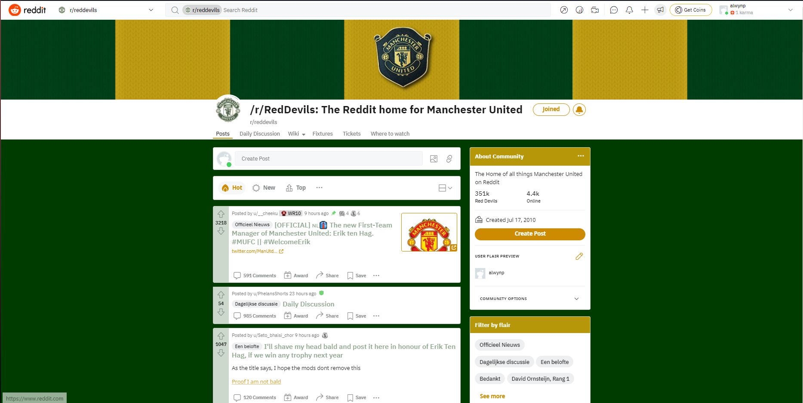

Reddit Usability & Accessibility Review
Review Writen by Alwyn Phelan on 21/4/22
Reddit Link:
Click here
When a user uses a website for the first time the first thing they expect is a positive display of usability and accessibility. Whether they seek this knowingly or not it's crucial. A website I have used to review the usability and accessibility of is Reddit. I will be looking at the different sections of reddit in detail. I will be using headings to show good and bad examples of the usability. I will be using the usability heuristics to showcase.
Used example:
